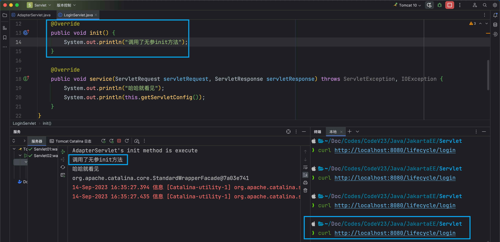
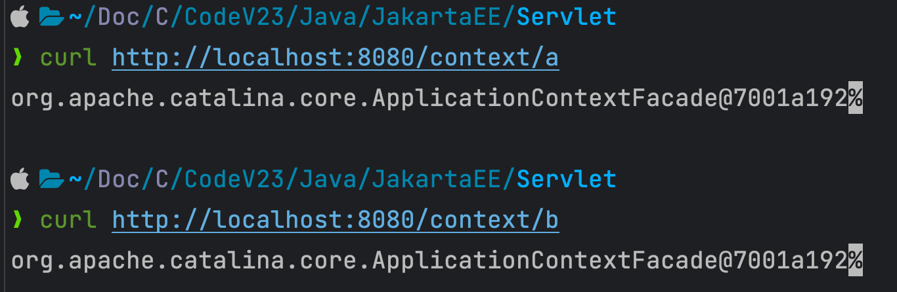
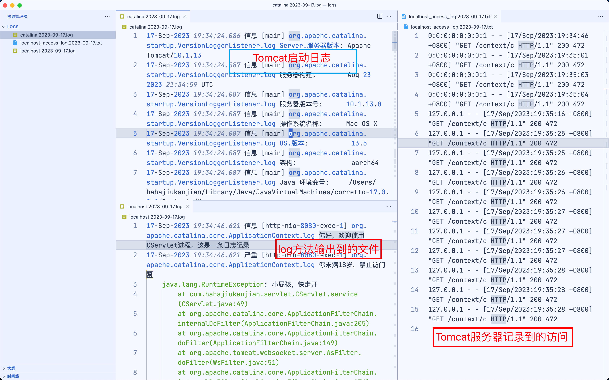
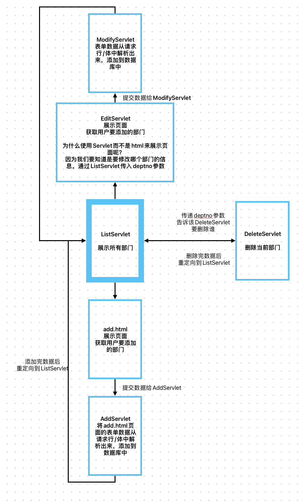

Servlet
IDEA创建Servlet项目
1、创建一个JavaSE模块

不要创建JakartaEE模块等等，因为它们使用Maven，我们只创建单纯的Tomcat+Servlet+JSP项目。
2、添加web目录
由于创建出的模块没有web目录，我们需要双击Shift搜索“添加框架支持”，选择Web
3、完善Tomcat运行环境
Servlet生命周期
自己new的Servlet对象不受Web容器的管理
Web容器（Tomcat服务器）在创建Servlet对象时，会先创建一个HashMap集合，将其创建的Servlet对象都存入到集合当中，统一进行管理。
但是我们自己new出来的Servlet对象，没有添加到集合当中，不受Web容器的管理。
因此自己创建的Servlet对象的生命周期与
服务器启动后，不会创建Servlet对象
证明：
| Java | |
|---|---|
1 2 3 4 5 6 7 8 9 | |

服务器启动后，AServlet的构造方法并没有被调用。
解释：
在服务器刚刚启动的时候，加入我们写了1000个Servlet类，如果都创建了对象，会非常占用内存。
根据用户发送的请求，动态的创建Servlet
配置Servlet类在服务器启动时，自动创建对象
如果在web.xml中配置`<load-on-startup>任意一个整数</load-on-startup>，那么该servlet类会在服务器启动时启动创建。
整数越小，表示创建对象的优先级越高。不用在意负数。可以理解为数组下标
| XML | |
|---|---|
1 2 3 4 5 6 7 8 9 | |
生命周期
| Bash | |
|---|---|
1 2 3 4 5 6 7 8 9 10 11 | |
根据以上结果我们可以得知
- 用户在发送第一次请求的时候Servlet对象被实例化（AServlet的构造方法被执行了。并且执行的是无参数构造方法。）
- AServlet对象被创建出来之后，Tomcat服务器马上调用了AServlet对象的init方法。（init方法在执行的时候，AServlet对象已经存在了。已经被创建出来了。）
-
用户发送第一次请求的时候，init方法执行之后，Tomcat服务器马上调用AServlet对象的service方法。
-
根据以上输出结果得知，用户在发送第二次，或者第三次，或者第四次请求的时候，Servlet对象并没有新建，还是使用之前创建好的Servlet对象，直接调用该Servlet对象的service方法，这说明：
-
Servlet对象是单例的（单实例的。但是要注意：Servlet对象是单实例的，但是Servlet类并不符合单例模式。我们称之为假单例。之所以单例是因为Servlet对象的创建我们javaweb程序员管不着，这个对象的创建只能是Tomcat来说了算，Tomcat只创建了一个，所以导致了单例，但是属于假单例。真单例模式，构造方法是私有化的。）
-
无参数构造方法、init方法只在第一次用户发送请求的时候执行。也就是说无参数构造方法只执行一次。init方法也只被Tomcat服务器调用一次。
-
只要用户发送一次请求：service方法必然会被Tomcat服务器调用一次。发送100次请求，service方法会被调用100次。
-
-
关闭服务器的时候，控制台输出了以下内容：
Text Only 1AServlet's destroy method execute! -
通过以上输出内容，可以得出以下结论：
- Servlet的destroy方法只被Tomcat服务器调用一次。
- destroy方法是在什么时候被调用的？
- 在服务器关闭的时候。
- 因为服务器关闭的时候要销毁AServlet对象的内存。
- 服务器在销毁AServlet对象内存之前，Tomcat服务器会自动调用AServlet对象的destroy方法。
-
请问：destroy方法调用的时候，对象销毁了还是没有销毁呢？
- destroy方法执行的时候AServlet对象还在，没有被销毁。destroy方法执行结束之后，AServlet对象的内存才会被Tomcat释放。
-
Servlet对象更像一个人的一生：
- Servlet的无参数构造方法执行：标志着你出生了。
- Servlet对象的init方法的执行：标志着你正在接受教育。
- Servlet对象的service方法的执行：标志着你已经开始工作了，已经开始为人类提供服务了。
- Servlet对象的destroy方法的执行：标志着临终。有什么遗言，抓紧的。要不然，来不及了。
-
关于Servlet类中方法的调用次数？
- 构造方法只执行一次。
- init方法只执行一次。
- service方法：用户发送一次请求则执行一次，发送N次请求则执行N次。
- destroy方法只执行一次。
tips
Q：在Servlet中，init方法和构造方法都是只执行一次，并且它们执行的时间大致相同。为什么Sun公司在制定Servlet规范的时候，制定了init方法呢？直接使用构造方法不就行了吗？
A：如果程序员使用构造方法初始化Servlet对象，很容易写出有参数的构造方法。而Tomcat服务器，通过反射机制创建Servlet对象时，只能调用无参构造方法。因此不如重新制定一个规范，使用init方法初始化Servlet对象。
适配器模式
我们的手机直接插在220V的电压上，手机可能会报废掉。因此我们需要手机的插头（充电适配器）
在AServlet实现Servlet接口的时候，需要实现很多的方法，而我们实际常用的只有init、service、destory方法。
因此我们可以写一个AAdapter抽象类，实现其他不常用的方法，抽象init、service、destory方法。
但是这样AServlet只能通过继承（extends）的方式，来实现Servlet类的方法，会占用继承位。
完善适配器
1、接收可能会用到的ServletConfig对象
tomcat为代码大致写法
| Java | |
|---|---|
1 2 3 4 5 6 7 8 9 10 11 12 13 14 15 16 17 18 19 | |
在创建Servlet对象的时候，会创建ServletConfig对象。将其作为形参传入servlet对象的init方法中。
我们创建的适配器，只抽象了service方法。public abstract void service(ServletRequest servletRequest, ServletResponse servletResponse) throws ServletException, IOException;
这个方法无法接收到servletConfig形参的值。我们需要对适配器进行完善。使我们在继承适配器的时候能够得到servletConfig的值
| Java | |
|---|---|
1 2 3 4 5 6 7 8 9 10 11 12 13 14 15 16 17 | |
我们在AdapterServlet（适配器Servlet类）中添加了私有的成员变量servletConfig。并创建了get方法。这样通过子类调用this.getServletConfig()，即可获得形参servletConfig的值。
查看输出结果：
2、给父类的init方法加上final修饰
如果子类重写init方法，步骤1就会失效
| Java | |
|---|---|
1 2 3 4 5 6 7 8 9 10 11 12 | |
子类重写了init方法，父类（AdapterServlet）的init方法不会被执行。导致service中获取的servletConfig对象的值为null。
Q：如何解决这个问题呢？
A：将父类的init方法加上final修饰，使子类不能重写该方法。
| Java | |
|---|---|
1 2 3 4 5 6 7 | |
3、提供一个无参的init方法供子类重写
父类当中有参数的init方法已经加上了final修饰，无法被子类重写。而子类在写业务的时候，可能需要重写init方法，来达到业务的需求。这时候应该怎么办呢？
让父类提供一个无参的init方法。
| Java | |
|---|---|
1 2 3 4 5 6 7 8 9 | |
并且在有参数的init方法（Tomcat服务器中调用的是有参数的init方法）中调用这个无参数的init方法。
这样，如果子类需要重写init方法时，只需要重写无参数的init方法就可以啦。

官方提供的完善适配器
包路径：jakarta.servlet.GenericServlet;
| Java | |
|---|---|
1 2 3 4 5 6 7 8 9 10 11 12 13 14 15 | |
可以发现，官方的适配器部分实现思路与我们上面的思路类似（因为我们上面的思路就是跟着官方来的啦）。
ServletConfig
ServletConfig是Servlet中的一个规范（接口）
由Sun公司提供。Tomcat进行实现（org.apache.catalina.core.SdardWrapperFacade）
在上面，我们用了很巧妙的思路获取到了ServletConfig对象。它有什么作用呢？
他的作用就是：获取我们自己在web.xml文件中配置的内容信息。
| XML | |
|---|---|
1 2 3 4 5 6 7 8 | |
-
一个Servlet对应一个ServletConfig对象。
-
Servlet对象是Tomcat服务器创建，并且ServletConfig对象也是Tomcat服务器创建。并且默认情况下，他们都是在用户发送第一次请求的时候创建。
-
Tomcat服务器调用Servlet对象的init方法的时候需要传一个ServletConfig对象的参数给init方法。
-
ServletConfig接口的实现类是Tomcat服务器给实现的。（Tomcat服务器说的就是WEB服务器。）
-
ServletConfig接口有哪些常用的方法？
-
java public String getInitParameter(String name); // 通过初始化参数的name获取value public Enumeration<String> getInitParameterNames(); // 获取所有的初始化参数的name public ServletContext getServletContext(); // 获取ServletContext对象 public String getServletName(); // 获取Servlet的name -
以上方法在Servlet类当中，都可以使用this去调用。因为GenericServlet实现了ServletConfig接口。
ServletContext
ServletContext是Servlet中的规范（接口）
由Sun公司设计提供。Tomcat实现（org.apache.catalina.core.ApplicationContextFacade）
一个webapp中共享一个ServletContext
在ServletConfig中，我们已经了解了它大部分方法的作用。但是使用getServletContext方法获取到的ServletContext是用来干什么的，我们还不知道。现在我们来了解一下ServletContext
| Java | |
|---|---|
1 2 3 4 5 6 7 8 9 10 11 | |
先获取到ServletContext并将其输出到页面上（同时还有一个BServlet）

我们可以发现，A/BServlet的ServletContext是同一个值。
ServletContext的作用是包含当前webapp中所有servlet对象的数据（包含一整个web.xml)
ServletContext的常用方法
获取web.xml文件中的内容
| Java | |
|---|---|
1 2 | |
| XML | |
|---|---|
1 2 3 4 5 6 7 8 9 10 11 | |
获取当前webapp的根路径名称
| Java | |
|---|---|
1 2 3 4 | |
获取当前文件的真实路径（在OS中的绝对路径）
| Java | |
|---|---|
1 2 3 | |
| Java | |
|---|---|
1 2 3 4 5 6 7 8 9 10 11 12 13 14 15 16 17 | |

添加、获取、删除 应用域中的数据
| Java | |
|---|---|
1 2 3 4 5 6 | |
问题与回答
ServletContext还有另外一个名字：应用域（后面还有其他域：请求域、会话域....）
如果所有用户共享一份数据、数据量较小、数据固定（不经常修改），那么这样的数据可以放到ServletContext中（也就是放到web.xml中的
context-param标签中Q：为什么是所有用户共享的数据，才能放到应用域中
A：不是共享的没有意义。因为ServletContext这个对象在一个webapp中只有一个。只有需要共享的数据放入其中才有意义
Q：为什么要数据量小，才能放到应用域中
A：这些数据在服务器运行时会放入堆内存中。如果数据量比较大，会占用太多的堆内存，拖慢服务器运行的速度。并且ServletContext对象的生命周期比较长，在服务器关闭的时候才会被销毁，会影响服务器的性能。占用内存较小的数据量可以考虑放进去。
Q：为什么要这些数据很少被修改，才能放到应用域中
A：所有用户共享的数据，如果涉及到需要修改的操作，必然会存在线程并发所导致的安全问题。所以放到ServletContext对象中的数据一般是只读的
数据量小、所有用户共享、又不修改，这样的数据放到ServletContext这个应用域当中，会大大提升效率。因为应用域相当于一个缓存，放到缓存中的数据，下次在用的时候，不需要从数据库中再次获取，大大提升执行效率。
常见的缓存机制
- 数据库连接池
- 这里所说的连接池中的连接是java语言连接数据库的连接对象：java.sql.Connection对象。
- JVM是一个进程。MySQL数据库是一个进程。进程和进程之间建立连接，打开通道是很费劲的。是很耗费资源的。怎么办？可以提前先创建好N个Connection连接对象，将连接对象放到一个集合当中，我们把这个放有Connection对象的集合称为连接池。每一次用户连接的时候不需要再新建连接对象，省去了新建的环节，直接从连接池中获取连接对象，大大提升访问效率。
- 连接池
- 最小连接数
- 最大连接数
- 连接池可以提高用户的访问效率。当然也可以保证数据库的安全性。
- 线程池
- Tomcat服务器本身就是支持多线程的。
- Tomcat服务器是在用户发送一次请求，就新建一个Thread线程对象吗？
- 当然不是，实际上是在Tomcat服务器启动的时候，会先创建好N多个线程Thread对象，然后将线程对象放到集合当中，称为线程池。用户发送请求过来之后，需要有一个对应的线程来处理这个请求，这个时候线程对象就会直接从线程池中拿，效率比较高。
- 所有的WEB服务器，或者应用服务器，都是支持多线程的，都有线程池机制。
- ServletContext应用域
- 堆内存当中的字符串常量池
- "abc"现在字符串常量池中找，如果有，直接拿来用；如果没有，则新建，再放入字符串常量池
- 堆内存当中的整数常量池
- [-128 ~ 127]一共256个Integer类型的引用，放在整数型常量池中。没有超出这个范围的话，直接从常量池中取。
- redis
HTTP协议
什么是协议？
协议是某些人或者某些组织制定的一套规范。
我说话你能听懂，你说话我也能听懂，这说明我们之间的聊天遵循着一种规范，一套协议。这套协议就是：普通话协议。遵循这个协议的人可以进行沟通。
什么是HTTP协议？
HTTP协议：是W3C制定的一种超文本传输协议。（通信协议：发送消息的模版提前被制定好。）
HTTP协议游走在B和S之间。B向S发数据要遵循HTTP协议。S向B发数据同样需要遵循HTTP协议。这样B和S才能解耦合。
W3C是什么？
万维网联盟组织
负责制定标准的：HTTP HTML4.0 HTML5 XML DOM等规范都是W3C制定的。
万维网之父：蒂姆·伯纳斯·李
超文本是什么？
超文本说的就是：不是普通文本，比如流媒体：声音、视频、图片等。
HTTP协议支持：不但可以传送普通字符串，同样支持传递声音、视频、图片等流媒体信息。
解耦合是什么？
B不依赖S。
S不依赖B。
不管是哪个品牌的浏览器，都是一样的向WEB服务器发送数据，表现为S不依赖B
不管是哪个品牌的WEB服务器，都是一样的向浏览器发送数据，表现为B不依赖S
具体例子：
B指浏览器。浏览器有许多种：FireFox、Safari、Chrome、IE、Edge等等。
S指服务器。服务器也有多种：Tomcat、jboss等等。我们甚至能够自己写一个简单的服务器。
Firefox浏览器 可以向 Tomcat发送请求，也可以向Jetty服务器发送请求。浏览器不依赖具体的服务器品牌。
WEB服务器也不依赖具体的浏览器品牌。可以是Firefox浏览器，也可以是Chrome浏览器，可以是IE，都行。
浏览器（B）向 服务器（S）发送数据，叫做请求（Request）
服务器（S） 向浏览器（B）发送数据，叫做响应（Response）
HTTP协议包括什么？
请求协议
浏览器 向 WEB服务器发送数据的时候，这条数据需要遵循一套标准。这套标准中制定了请求报文的具体格式
响应协议
WEB服务器 向 浏览器发送数据的时候，这条数据需要遵循一套标准。这套标准中制定了响应报文的具体格式
请求协议（B --> S）
包括：
请求行
请求头
空白行
请求体
具体格式：
GET请求
| Text Only | |
|---|---|
1 2 3 4 5 6 7 8 9 10 11 12 13 14 15 16 17 18 19 | |
POST请求
| Text Only | |
|---|---|
1 2 3 4 5 6 7 8 9 10 11 12 13 14 15 16 17 18 19 20 21 22 23 | |
分析
- 请求行
GET /Servlet05/getServlet?username=hahajiukanjian&password=123- 包括三部分
- 第一部分：请求的方式（共7七种）
- get（常用的）
- post（常用的）
- delete
- put
- head
- options
- trace
- 第二部分：URI
- 什么是URI？
- 统一资源标识符。代表网络中某个资源的名字。但是通过URI是无法定位到该资源的
- 什么是URL？
- 统一资源定位符。代表网络中某个资源，同时，通过URL是可以定位到该资源的。
- URL 和 URI有什么关系，什么区别？
- URL 包括 URI
- http://localhost:8080/Servlet05/getServlet 这是URL
- /Servlet05/getServlet 这是URI
- 什么是URI？
- 第三部分：HTTP协议版本号
- 第一部分：请求的方式（共7七种）
- 包括三部分
- 请求头
- 请求的服务器IP
- 访问服务器的端口
- 浏览器信息
- 客户端的主机信息
- Cookie信息
- ...
- 空白行
- 用于分割 请求头 和 请求体
- 请求体
- 向服务器发送的具体数据。
响应协议（S --> B）
包括：
状态行
响应头
空白行
响应体
具体格式：
| Text Only | |
|---|---|
1 2 3 4 5 6 7 8 9 10 11 12 13 14 15 16 | |
分析
- 状态行
- 三部分组成
- 第一部分：协议版本号（HTTP/1.1）
- 第二部分：状态码（HTTP协议中规定的响应状态号。不同的响应结果对应不同的号码。）
- 200 表示请求响应成功，正常结束。
- 404表示访问的资源不存在，通常是因为要么是你路径写错了，要么是路径写对了，但是服务器中对应的资源并没有启动成功。总之404错误是前端错误。
- 405表示前端发送的请求方式与后端请求的处理方式不一致时发生：
- 比如：前端是POST请求，后端的处理方式按照get方式进行处理时，发生405
- 比如：前端是GET请求，后端的处理方式按照post方式进行处理时，发生405
- 500表示服务器端的程序出现了异常。一般会认为是服务器端的错误导致的。
- 以4开始的，一般是浏览器端的错误导致的。
- 以5开始的，一般是服务器端的错误导致的。
- 第三部分：状态的描述信息
- ok 表示正常成功结束。
- not found 表示资源找不到。
- 三部分组成
-
响应头：
- 响应的内容类型
- 响应的内容长度
- 响应的时间
- ......
-
空白行：
-
用来分隔“响应头”和“响应体”的。
-
响应体：
-
响应体就是响应的正文，这些内容是一个长的字符串，这个字符串被浏览器渲染，解释并执行，最终展示出效果。
怎么向服务器发送GET请求，怎么向服务器发送POST请求？
POST
到目前为止，只有一种情况可以发送POST请求：使用form表单，并且form标签中的method属性值为：method="post"。
GET
其他所有情况一律都是get请求：
在浏览器地址栏上直接输入URL，敲回车，届于get请求。
在浏览器上直接点击超链接，属于get请求。
使用form表单提交数据时，form标签中没有写method属性，默认就是get
或者使用form的时候，form标签中method属性值为：method="'get”
...
GET请求和POST请求有什么区别？
GET
- get请求发送数据的时候，数据会挂在URI的后面，并且在URI后面添加一个“?”，"?"后面是数据。这样会导致发送的数据回显在浏览器的地址栏上。（get请求在“请求行”上发送数据）
- http://localhost:8080/servlet05/getServlet?username=zhangsan&userpwd=1111
- get请求只能发送普通的字符串。并且发送的字符串长度有限制，不同的浏览器限制不同。这个没有明确的规范。
- get请求无法发送大数据量。
- get请求在W3C中是这样说的：get请求比较适合从服务器端获取数据。
- get请求是安全的。get请求是绝对安全的。为什么？因为get请求只是为了从服务器上获取数据。不会对服务器造成威胁。（get本身是安全的，你不要用错了。用错了之后又冤枉人家get不安全，你这样不好（太坏了），那是你自己的问题，不是get请求的问题。）
- get请求支持缓存。
- https://n.sinaimg.cn/finance/590/w240h350/20211101/b40c-b425eb67cabc342ff5b9dc018b4b00cc.jpg首次访问这个链接，浏览器会将这个资源缓存起来，这样下次使用get请求访问这个链接的时候，就会直接从浏览器的缓存当中取出，而不是通过服务器的响应取出。（在有些时候，即便是我们断网了，在使用get请求访问一些已经访问过的资源的时候，仍然能够访问到，因为有缓存嘛）
- 任何一个get请求最终的“响应结果”都会被浏览器缓存起来。在浏览器缓存当中：
- 一个get请求的路径a 对应 一个资源。
- 一个get请求的路径b 对应 一个资源。
- 一个get请求的路径c 对应 一个资源。
- ....
- 实际上，你只要发送get请求，浏览器做的第一件事都是先从本地浏览器缓存中找，找不到的时候才会去服务器上获取。这种缓存机制目的是为了提高用户的体验。
- 有没有这样一个需求：我们不希望get请求走缓存，怎么办？怎么避免走缓存？我希望每一次这个get请求都去服务器上找资源，我不想从本地浏览器的缓存中取。
- 只要每一次get请求的请求路径不同即可。
- https://n.sinaimg.cn/finance/590/w240h350/20211101/7cabc342ff5b9dc018b4b00cc.jpg?t=789789787897898
- https://n.sinaimg.cn/finance/590/w240h350/20211101/7cabc342ff5b9dc018b4b00cc.jpg?t=789789787897899
- https://n.sinaimg.cn/finance/590/w240h350/20211101/7cabc342ff5b9dc018b4b00cc.jpg?t=系统毫秒数
- 怎么解决？可以在路径的后面添加一个每时每刻都在变化的“时间戳”，这样，每一次的请求路径都不一样，浏览器就不走缓存了。
POST
- post请求发送数据的时候，在请求体当中发送。不会回显到浏览器的地址栏上。也就是说post发送的数据，在浏览器地址栏上看不到。（post在“请求体”当中发送数据）
- post请求可以发送任何类型的数据，包括普通字符串，流媒体等信息：视频、声音、图片。
- post请求可以发送大数据量，理论上没有长度限制。
- post请求在W3C中是这样说的：post请求比较适合向服务器端传送数据。
- post请求是危险的。为什么？因为post请求是向服务器提交数据，如果这些数据通过后门的方式进入到服务器当中，服务器是很危险的。另外post是为了提交数据，所以一般情况下拦截请求的时候，大部分会选择拦截（监听）post请求。
- post请求不支持缓存。（POST是用来修改服务器端的资源的。）
- post请求之后，服务器“响应的结果”不会被浏览器缓存起来。因为这个缓存没有意义。
GET请求和POST请求如何选择？
怎么选择GET请求和POST请求呢？衡量标准是什么呢？你这个请求是想获取服务器端的数据，还是想向服务器发送数据。如果你是想从服务器上获取资源，建议使用GET请求，如果你这个请求是为了向服务器提交数据，建议使用POST请求。
- 大部分的form表单提交，都是post方式，因为form表单中要填写大量的数据，这些数据是收集用户的信息，一般是需要传给服务器，服务器将这些数据保存/修改等。
- 如果表单中有敏感信息，还是建议适用post请求，因为get请求会回显敏感信息到浏览器地址栏上。（例如：密码信息）
- 做文件上传，一定是post请求。要传的数据不是普通文本。
- 其他情况都可以使用get请求。
不管你是get请求还是post请求，发送的请求数据格式是==完全相同==的，只不过位置不同，格式都是统一的：
- name=value&name=value&name=value&name=value
- name是什么？
- 以form表单为例：form表单中input标签的name。
- value是什么？
- 以form表单为例：form表单中input标签的value。
模板方法设计模式
- 什么是设计模式？
- 某个问题的固定的解决方案。(可以被重复使用。)
- 你知道哪些设计模式？
- GoF设计模式：
- 通常我们所说的23种设计模式。（Gang of Four：4人组提出的设计模式）
- 单例模式
- 工厂模式
- 代理模式
- 门面模式
- 责任链设计模式
- 观察者模式
- 模板方法设计模式
- .....
- JavaEE设计模式：
- DAO
- DTO
- VO
- PO
- pojo
- ....
- ....
- GoF设计模式：
- 什么是模板方法设计模式？
- 在模板类的模板方法当中定义核心算法骨架，具体的实现步骤可以延迟到子类当中完成。
- 模板类通常是一个抽象类，模板类当中的模板方法定义核心算法，这个方法通常是final的（但也可以不是final的）
- 模板类当中的抽象方法就是不确定实现的方法，这个不确定怎么实现的事儿交给子类去做。
HttpServlet
HttpServlet类是专门为HTTP协议准备的。比GenericServlet更加适合HTTP协议下的开发。
jakarta.servlet.http.HttpServlet
到目前为止我们接触了servlet规范中哪些接口？
- jakarta.servlet.Servlet 核心接口（接口）
- jakarta.servlet.ServletConfig Servlet配置信息接口（接口）
- jakarta.servlet.ServletContext Servlet上下文接口（接口）
- jakarta.servlet.ServletRequest Servlet请求接口（接口）
- jakarta.servlet.ServletResponse Servlet响应接口（接口）
- jakarta.servlet.ServletException Servlet异常（类）
- jakarta.servlet.GenericServlet 标准通用的Servlet类（抽象类）
http包下都有哪些类和接口呢？jakarta.servlet.http.*;
- HttpServlet（HTTP协议专用的Servlet类，接口）
- HttpServletRequest（HTTP协议专用的请求对象，接口）
- HttpServletResponse （HTTP协议专用的响应对象，接口）
HttpServlet源码分析：
| Java | |
|---|---|
1 2 3 4 5 6 7 8 9 10 11 12 13 14 15 16 17 18 19 20 21 22 23 24 25 26 27 28 29 30 31 32 33 34 35 36 37 38 39 40 41 42 43 44 45 46 47 48 49 50 51 52 53 54 55 56 57 58 59 60 61 62 63 64 65 66 67 68 69 70 71 72 73 74 75 76 77 78 79 80 81 82 83 84 85 86 87 88 89 90 91 92 93 94 95 96 97 98 99 100 101 102 103 104 105 106 107 108 109 110 111 112 113 114 115 116 117 118 119 120 121 122 123 124 125 126 127 128 129 130 131 132 133 134 135 136 137 138 139 140 141 142 143 144 145 146 147 148 149 150 151 152 153 154 155 156 157 158 159 160 | |
最终我们敲定Servlet的开发步骤：
- 第一步：编写一个Servlet类，直接继承HttpServlet
- 第二步：重写doGet方法或者重写doPost方法，到底重写谁，javaweb程序员说了算。
- 第三步：将Servlet类配置到web.xml文件当中。
- 第四步：准备前端的页面（form表单），form表单中指定请求路径即可。
HttpServletRequest
HttpServletRequest，简称request对象。封装了请求协议的全部内容。
Tomcat服务器（WEB服务器）将“请求协议”中的数据全部解析出来，然后将这些数据全部封装到request对象当中了。
也就是说，我们只要面向HttpServletRequest，就可以获取请求协议中的数据。
HttpServletRequest接口的父接口：ServletRequest
| Java | |
|---|---|
1 | |
实现类
通过测试：org.apache.catalina.connector.RequestFacade 实现了 HttpServletRequest接口
| Java | |
|---|---|
1 | |
request对象中都有什么信息？
封装了HTTP的请求协议。
实际上是用户发送请求的时候，遵循了HTTP协议，发送的是HTTP的请求协议，Tomcat服务器将HTTP协议中的信息以及数据全部解析出来，然后Tomcat服务器把这些信息封装到HttpServletRequest对象当中，传给了我们javaweb程序员。
request和response对象的生命周期？
request对象和response对象，一个是请求对象，一个是响应对象。这两个对象只在当前请求中有效。
一次请求对应一个request。两次请求则对应两个request。
常用的方法
获取前端浏览器用户提交的数据
| Java | |
|---|---|
1 2 3 4 5 | |
思考：如果是你，前端的form表单提交了数据之后，你准备怎么存储这些数据，你准备采用什么样的数据结构去存储这些数据呢？
前端提交的数据格式：username=abc&userpwd=111&aihao=s&aihao=d&aihao=tt
我会采用Map集合来存储：
Java Map<String,String> key存储String value存储String 这种想法对吗？不对。 如果采用以上的数据结构存储会发现key重复的时候value覆盖。 key value --------------------- username abc userpwd 111 aihao s aihao d aihao tt 这样是不行的，因为map的key不能重复。 Map<String, String[]> key存储String value存储String[] key value ------------------------------- username {"abc"} userpwd {"111"} aihao {"s","d","tt"}注意：前端表单提交数据的时候，假设提交了120这样的“数字”，其实是以字符串"120"的方式提交的，所以服务器端获取到的一定是一个字符串的"120"，而不是一个数字。（前端永远提交的是字符串，后端获取的也永远是字符串。）
转发（一次请求）
| Java | |
|---|---|
1 2 3 4 5 6 7 8 9 | |
两个Servlet怎么共享数据？
- 将数据放到ServletContext应用域当中，当然是可以的，但是应用域范围太大，占用资源太多。不建议使用。
- 可以将数据放到request域当中，然后AServlet转发到BServlet，保证AServlet和BServlet在同一次请求当中，这样就可以做到两个Servlet，或者多个Servlet共享同一份数据。
获取请求域中的数据
| Java | |
|---|---|
1 | |
其他常用方法
| Java | |
|---|---|
1 2 3 4 5 6 7 8 9 10 11 12 13 14 15 16 17 18 19 20 21 22 23 24 25 26 27 28 29 30 31 32 33 34 35 | |
HttpServletResponse
HttpServletResponse对象是专门用来响应HTTP协议到浏览器的。
关于WEB-INF目录
在WEB-INF目录下新建了一个文件：welcome.html
打开浏览器访问：http://localhost:8080/servlet07/WEB-INF/welcome.html 出现了404错误。
注意：放在WEB-INF目录下的资源是受保护的。在浏览器上不能够通过路径直接访问。所以像HTML、CSS、JS、image等静态资源一定要放到WEB-INF目录之外。
关于一个web站点的欢迎页面
-
什么是一个web站点的欢迎页面？
- 对于一个webapp来说，我们是可以设置它的欢迎页面的。
- 设置了欢迎页面之后，当你访问这个webapp的时候，或者访问这个web站点的时候，没有指定任何“资源路径”，这个时候会默认访问你的欢迎页面。
- 我们一般的访问方式是：
- http://localhost:8080/servlet06/login.html 这种方式是指定了要访问的就是login.html资源。
- 如果我们访问的方式是：
- http://localhost:8080/servlet06 如果我们访问的就是这个站点，没有指定具体的资源路径。它默认会访问谁呢？
- 默认会访问你设置的欢迎页面。
-
怎么设置欢迎页面呢？
-
第一步：我在IDEA工具的web目录下新建了一个文件login.html
-
第二步：在web.xml文件中进行了以下的配置
-
xml <welcome-file-list> <welcome-file>login.html</welcome-file> </welcome-file-list> -
注意：设置欢迎页面的时候，这个路径不需要以“/”开始。并且这个路径默认是从webapp的根下开始查找。
-
-
第三步：启动服务器，浏览器地址栏输入地址
- http://localhost:8080/servlet07
-
-
如果在webapp的根下新建一个目录，目录中再给一个文件，那么这个欢迎页该如何设置呢？
-
在webapp根下新建page1
-
在page1下新建page2目录
-
在page2目录下新建page.html页面
-
在web.xml文件中应该这样配置
-
<welcome-file-list> <welcome-file>page1/page2/page.html</welcome-file> </welcome-file-list> -
注意：路径不需要以“/”开始，并且路径默认从webapp的根下开始找。
-
-
-
一个webapp是可以设置多个欢迎页面的
-
xml <welcome-file-list> <welcome-file>page1/page2/page.html</welcome-file> <welcome-file>login.html</welcome-file> </welcome-file-list> -
注意：越靠上的优先级越高。找不到的继续向下找。
-
-
你有没有注意一件事：当我的文件名设置为index.html的时候，不需要在web.xml文件中进行配置欢迎页面。这是为什么？
-
这是因为小猫咪Tomcat服务器已经提前配置好了。
-
实际上配置欢迎页面有两个地方可以配置：
-
一个是在webapp内部的web.xml文件中。（在这个地方配置的属于局部配置）
-
一个是在CATALINA_HOME/conf/web.xml文件中进行配置。（在这个地方配置的属于全局配置）
-
xml <welcome-file-list> <welcome-file>index.html</welcome-file> <welcome-file>index.htm</welcome-file> <welcome-file>index.jsp</welcome-file> </welcome-file-list> -
Tomcat服务器的全局欢迎页面是：index.html index.htm index.jsp。如果你一个web站点没有设置局部的欢迎页面，Tomcat服务器就会以index.html index.htm index.jsp作为一个web站点的欢迎页面。
-
-
注意原则：局部优先原则。（就近原则）
-
-
-
欢迎页可以是一个Servlet吗？
-
当然可以。
-
你不要多想，欢迎页就是一个资源，既然是一个资源，那么可以是静态资源，也可以是动态资源。
-
静态资源：index.html welcome.html .....
-
动态资源：Servlet类。
-
步骤：
-
第一步：写一个Servlet
java public class WelcomeServlet extends HttpServlet { @Override protected void doGet(HttpServletRequest request, HttpServletResponse response) throws ServletException, IOException { response.setContentType("text/html"); PrintWriter out = response.getWriter(); out.print("<h1>welcome to bjpowernode!</h1>"); } }
-
第二步：在web.xml文件中配置servlet
xml <servlet> <servlet-name>welcomeServlet</servlet-name> <servlet-class>com.bjpowernode.javaweb.servlet.WelcomeServlet</servlet-class> </servlet> <servlet-mapping> <servlet-name>welcomeServlet</servlet-name> <url-pattern>/fdsa/fds/a/fds/af/ds/af/dsafdsafdsa</url-pattern> </servlet-mapping>
-
第三步：在web.xml文件中配置欢迎页
xml <welcome-file-list> <welcome-file>fdsa/fds/a/fds/af/ds/af/dsafdsafdsa</welcome-file> </welcome-file-list>
-
-
使用Servlet制作CURD系统
增删改查
1. 创建数据库表
| SQL | |
|---|---|
1 2 3 4 5 6 7 8 9 10 11 | |
2. 创建html静态页面
欢迎页面index
部门展示页面list
添加部门页面add
修改部门页面alter
展示部门详情页面

转发和重定向
在一个web应用中通过两种方式，可以完成资源的跳转：转发和重定向
转发
| Java | |
|---|---|
1 2 3 4 | |
- 转发（一次请求）
- 在浏览器地址栏上发送的请求是：http://localhost:8080/servlet10/a ，最终请求结束之后，无论我们跳转到了哪个页面，浏览器地址栏上的地址还是这个。
- 本质区别：是由WEB服务器来控制的。A资源跳转到B资源，这个跳转动作是Tomcat服务器内部完成的。
重定向
| Java | |
|---|---|
1 2 3 4 5 | |
- 重定向（两次请求）
- 在浏览器地址栏上发送的请求是：http://localhost:8080/servlet10/a ，最终在浏览器地址栏上显示的地址是：http://localhost:8080/servlet10/b
- 本质区别：是浏览器完成的。具体跳转到哪个资源，是浏览器说了算。
转发和重定向应该如何选择？什么时候使用转发，什么时候使用重定向？
-
如果在上一个Servlet当中向request域当中绑定了数据，希望从下一个Servlet当中把request域里面的数据取出来，使用转发机制。
-
剩下所有的请求均使用重定向。（重定向使用较多。）
==转发会存在浏览器的刷新问题==。
如果我们此刻的操作是向数据库添加数据，当我们使用转发请求到达另一个页面时，浏览器的地址栏仍然保持着向数据库添加数据这个操作的 URL。如果此时我们刷新页面，还是会向数据库添加数据。
Servlet注解，简化配置
分析oa项目中的web.xml文件
现在只是一个单标的CRUD，没有复杂的业务逻辑，很简单的一丢丢功能。web.xml文件中就有如此多的配置信息。如果采用这种方式，对于一个大的项目来说，这样的话web.xml文件会非常庞大，有可能最终会达到几十兆。
在web.xml文件中进行servlet信息的配置，显然开发效率比较低，每一个都需要配置一下。
而且在web.xml文件中的配置是很少被修改的，所以这种配置信息能不能直接写到java类当中呢？可以的。
Servlet3.0版本之后，推出了各种Servlet基于注解式开发。
优点是什么？
- 开发效率高，不需要编写大量的配置信息。直接在java类上使用注解进行标注。
- web.xml文件体积变小了。
并不是说注解有了之后，web.xml文件就不需要了？
- 有一些需要变化的信息，还是要配置到web.xml文件中。一般都是 注解+配置文件 的开发模式。
- 一些不会经常变化修改的配置建议使用注解。一些可能会被修改的建议写到配置文件中。
我们的第一个注解：
| Java | |
|---|---|
1 | |
在Servlet类上使用：@WebServlet
WebServlet注解中有哪些属性呢？
- name 属性：用来指定Servlet的名字。等同于：
- value/urlPattern 属性：用来指定Servlet的映射路径。可以指定多个字符串。
。value属性名是可以省略的。 - loadOnStartUp属性：用来指定在服务器启动阶段是否加载该Servlet。等同于：
- 注意：属性是一个数组，如果数组中只有一个元素，使用该注解的时候，属性值的大括号可以省略。
- 注意：不是必须将所有属性都写上，只需要提供需要的。（需要什么用什么。）
注解对象的使用格式：
- @注解名称(属性名=属性值, 属性名=属性值, 属性名=属性值....)
使用模板方法设计模式优化oa项目
- 上面的注解解决了配置文件的问题。但是现在的oa项目仍然存在一个比较臃肿的问题。
- 一个单标的CRUD，就写了6个Servlet。如果一个复杂的业务系统，这种开发方式，显然会导致类爆炸。（类的数量太大。）
- 怎么解决这个类爆炸问题？可以使用模板方法设计模式。
- 怎么解决类爆炸问题？
- 以前的设计是一个请求一个Servlet类。1000个请求对应1000个Servlet类。导致类爆炸。
- 可以这样做：一个请求对应一个方法。一个业务对应一个Servlet类。
- 处理部门相关业务的对应一个DeptServlet。处理用户相关业务的对应一个UserServlet。处理银行卡卡片业务对应一个CardServlet。
| Java | |
|---|---|
1 2 3 4 5 6 7 8 9 10 11 12 13 14 15 16 17 18 19 20 21 22 23 | |
按照 Httpservlet 中 service 方法的设计模式模板，我们可以改造为 doPath 的形式
Session技术
HTTP是一个无状态的协议。
- 什么是状态？
- 状态通常指的是关于客户端或服务器的信息，用于跟踪它们之间的交互。
- 什么是无状态协议？
- 每个HTTP请求都是相互独立的，服务器不会保留关于客户端的任何信息或状态。每次HTTP请求都是独立的交互，服务器不会知道这个请求是与之前的请求相关联的。
- 为什么HTTP是无状态的
- 简化协议：HTTP的主要目标之一是保持协议的简洁性。无状态性质使协议更加简单，因为每个HTTP请求都是相互独立的，服务器无需保留关于客户端的状态信息。这使得协议的设计更加清晰，易于理解和实现。
- 可伸缩性：由于HTTP是无状态的，服务器不需要存储关于每个客户端连接的信息，这使得服务器更容易扩展以处理大量客户端请求。如果HTTP是有状态的，服务器需要在每个连接上维护客户端状态信息，这可能会导致服务器资源的快速耗尽。
- 容错性：无状态性质使得HTTP协议更加容错。即使在客户端或服务器端发生故障的情况下，可以重新建立连接并继续通信，因为先前的请求和响应不依赖于后续请求。
- 灵活性：无状态性质使得客户端和服务器之间的通信更加灵活。客户端可以随时向服务器发出请求，而服务器可以独立地处理每个请求，而不需要考虑之前的请求。
尽管这样能够减轻服务器的压力，但是我们在实际使用B/S结构的系统中，还是希望能够在多个HTTP请求之间保存某种信息（例如用户的身份认证状态、购物车内容等）。
虽然我们可以借助转发请求来实现，但是通过转发机制，不仅麻烦，还会造成很多的弊端（如刷新问题等）。
因此我们需要引入Session技术来实现在多个HTTP请求之间保存信息
什么是Session
- 全包路径：jakarta.servlet.http.HttpSession
- 翻译成中文是会话的意思
- 用户打开浏览器，进行一系列操作，然后最终将浏览器关闭，这个整个过程叫做：一次会话。会话在服务器端也有一个对应的java对象，这个java对象叫做：session。一个会话当中包含多次请求。（一次会话对应N次请求。）
- session机制属于B/S结构的一部分。如果使用php语言开发WEB项目，同样也是有session这种机制的。session机制实际上是一个规范。然后不同的语言对这种会话机制都有实现。
-
session对象最主要的作用是：保存会话状态。（用户登录成功了，这是一种登录成功的状态，你怎么把登录成功的状态一直保存下来呢？使用session对象可以保留会话状态。）
-
session对象是存储在服务器端的
-
一个session对象对应一个会话。
-
一次会话中包含多次请求。
-
session怎么获取？
- HttpSession session = request.getSession();
- 从服务器中获取session对象。如果没有获取到session对象，则新建一个session
- HttpSession session = request.getSession(false);
- 如果获取不到session对象，也不会新建session
-
为什么关闭浏览器，会话结束？
- 如果没有设置cookie的过期时间，浏览器默认将sessionid保存在浏览器缓存当中。当浏览器关闭后，浏览器缓存自然也被清除。再次打开浏览器访问该页面时，无法获取到上次的session ID，也就意味着会话结束了。
- 实际上，服务器端的session对象并没有因为关闭浏览器而被销毁。会话结束，只是因为无法对应上sessionID了。
-
session对象什么时候被销毁？
-
超时销毁
-
浏览器关闭的时候，服务器是不知道的，服务器无法监测到浏览器关闭了，所以session的销毁要依靠session超时机制。
-
java session.setMaxInactiveInterval(); // 使用该方法设置session的超时时间
-
-
手动销毁
-
系統提供了“安全退出”，用户可以点击这个按钮，这样服务器就知道你退出了，然后服务器会自动销毁session对象。
-
java session.invalidate(); // 使用该方法手动销毁session对象
-
-
session对象的实现原理。
HttpSession session = request.getSession();
这行代码很神奇。张三访问的时候获取的session对象就是张三的。李四访问的时候获取的session对象就是李四的。
-
JSESSIONID=xxxxxx 这个是以Cookie的形式保存在浏览器的内存中的。浏览器只要关闭。这个cookie就没有了。
-
在web服务器中，有一个管理session的表，类似于map集合。
- 这个表的key存储为：sessionid
- value存储为：session对象
- 当用户第一次发送请求时，服务器会创建一个新的session对象，并为这个对象创建一个sessionid。通过响应将sessionid发送给客户端（浏览器）。浏览器将其存储在cookie当中
- 当用户第二次向服务器发送请求时，浏览器会将sessionid附加到请求头当中，发送给服务器。服务器获取到sessionid后，根据id找到对应的session对象
Cookie
在session的实现原理中，每一个session对象都会关联一个sessionID
JSESSIONID=41C481F0224664BDB28E95081D23D5B8
以上这个键值对数据其实就是一个cookie对象
cookie是怎么生成的？
| Java | |
|---|---|
1 | |
通过服务器端创建cookie
| Java | |
|---|---|
1 | |
服务器通过响应，将cookie添加到浏览器中
被保存在什么地方？
- 保存在浏览器的运行内存中（只要浏览器关闭，cookie就消失了）
- 保存在本机的硬盘当中（永久保存）
有什么作用？
- cookie与session机制一样，都是为了保存会话状态
- cookie将会话的状态保存到浏览器客户端上（cookie数据存储在浏览器上/硬盘上）
- session是将会话状态保存到服务器上（session数据存储在服务器上）
使用案例
- 早期京东商城，不登录就能添加物品到购物车
Q：京东商城，在未登录的情况下，向购物车中放几件商品。然后关闭商城，再次打开浏览器，访问京东商城的时候，购物车中的商品还在，这是怎么做的？我没有登录，为什么购物车中还有商品呢？
A：将购物车中的商品编号放到cookie当中，cookie保存在硬盘文件当中。这样即使关闭浏览器。硬盘上的cookie还在。下一次再打开京东商城的时候，查看购物车的时候，会自动读取本地硬盘中存储的cookie，拿到商品编号，动态展示购物车中的商品。
京东存储购物车中商品的cookie可能是这样的：productIds=xxxxx,yyyy,zzz,kkkk
注意：cookie如果清除掉，购物车中的商品就消失了。
为什么早期京东会允许不登录就能添加商品到购物车呢？为了抢占用户
- 126邮箱中有一个功能：十天内免登录
这个功能也是需要cookie来实现的。
怎么让cookie失效？
- 十天后自动失效
- 改密码
- 浏览器手动清除cookie
cookie机制和session机制其实都不属于java中的机制，实际上cookie机制和session机制都是HTTP协议的一部分。php开发中也有cookie和session机制，只要是你是做web开发，不管是什么编程语言，cookie和session机制都是需要的。
HTTP协议中规定：任何一个cookie都是由name和value组成的。name和value都是字符串类型的。
常用方法
setMaxAge
| Java | |
|---|---|
1 2 | |
| Java | |
|---|---|
1 2 3 4 5 6 7 8 | |
setPath
| Java | |
|---|---|
1 2 | |
| Java | |
|---|---|
1 2 3 | |
浏览器什么时候会发送cookie？
如果没有设置cookie的path（setPath方法），那么浏览器发送cookie时，会根据创建它（这个cookie）的Servlet的路径来发送。
- 假设现在发送的请求路径是“http://localhost:8080/servlet13/cookie/generate”生成的cookie，如果cookie没有设置path，默认的path是什么？
- 默认的path是：http://localhost:8080/servlet13/cookie 以及它的子路径。
- 也就是说，以后只要浏览器的请求路径是http://localhost:8080/servlet13/cookie 这个路径以及这个路径下的子路径，cookie都会被发送到服务器。
浏览器发送cookie给服务器了，服务器中的java程序怎么接收？
| Java | |
|---|---|
1 | |